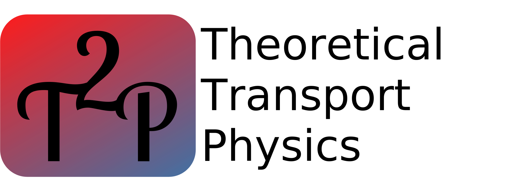

About us
We are an Emmy Noether research group based in the Department of Physics of Humboldt-Universität zu Berlin. We carry out theoretical+computational research to understand the thermal and charge transport properties of materials. Our primary focus is on the self-consistent transport of phonons and electrons – the so-called drag phenomenon.
People
Principal Investigator
Dr. Nakib H. Protik

Nakib obtained his PhD in Physics from Boston College (USA) in 2019. Since then he has been a Postdoctoral Fellow at Harvard University (USA), Postdoctoral Researcher at ICN2 (Spain), and an Alexander von Humboldt Postdoctoral Research Fellow at Humboldt-Universität (Germany) before establishing this group in 2024. His primary focus in on the physics of the interactions and transport phenomena in condensed matter, which he studies using ab initio methods.
Postdoctoral Researcher
TBA
PhD
Dwaipayan Paul
Dwaipayan completed his Integrated Master's in Physics from the National Institute of Science Education and Research (NISER), India. His research interests include development and application of molecular modeling techniques, with a goal of designing sustainable next-generation devices. Over the past two years, he has been involved in transport physics research in carbon nanotube heterojunction systems. Outside of academia, he enjoys singing and jamming during his free time.
Bachelor
William Wenig

Opening
We are looking to host a highly qualified person through the prestigious Alexander von Humboldt Postdoctoral Research Fellowship program. Interested people are encouraged to get in touch with a CV and statement of research purpose at nakib [dot] protik [at] physik.hu-berlin.de.
Research Software
elphbolt
This is a transport physics software suite for the ab initio computation of both the dragful and dragless electron and phonon Boltzmann transport equations. To get started with the code, check out its github repository and read about the theory behind it in the accompanying technical paper in npj Computational Materials.
Teaching
Introduction to Transport Theory
TBA
Funding
This group is funded by the Emmy Noether Program of the German Research Foundation (DFG).
Acknowledgment
We thank the fine people at Zulip for supporting our team communications needs.